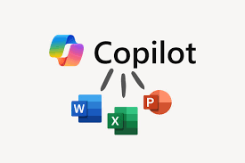
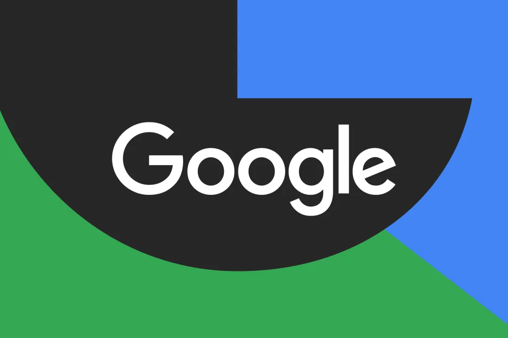

Los países miembros avanzan hacia un consumo sostenible
Publicado: 11/12/2025
La Unión Europea anunció hoy un nuevo marco de políticas energéticas orientadas a reducir las emisiones en un 40% antes de 2030. El acuerdo, resultado de semanas de negociación, promete transformar la industria energética.
Microsoft presenta un nuevo asistente basado en IA
Promete mejorar la productividad en empresa
Publicado: 10/12/2025

El nuevo asistente de IA de Microsoft busca revolucionar el entorno laboral.
La compañía tecnológica sorprendió con un sistema de IA capaz de automatizar tareas administrativas y ofrecer soporte en tiempo real a los trabajadores.
Google dice que se vinculará a más fuentes en el modo IA
El modo IA precederá su lista de fuentes con un fragmento generado por IA que explicará por qué son relevantes.
Publicado: 10/12/2025

Google mejora su motor de búsqueda con IA avanzada.
Google planea actualizar su función de búsqueda basada en IA, el Modo IA, para incluir más enlaces directos a las fuentes de las que extrae información. La compañía incluyó esta actualización como parte de un cambio más amplio en la forma en que interactúa con las fuentes, y afirmó que también incorporará los enlaces integrados en el Modo IA con un fragmento generado por IA para explicar su utilidad.
OpenAI, Anthropic y Block se alían para estandarizar la nueva era de agentes de IA
Las gigantes estadounidenses de la IA respaldan un nuevo esfuerzo por establecer normas abiertas para la creación de software y herramientas agenticas.
Publicado: 10/12/2025
Las principales empresas de IA unen fuerzas para establecer estándares comunes.
OpenAI, Anthropic y Block han cofundado una nueva organización de código abierto: la Agentic AI Foundation (AAIF), para promover normas sobre agentes de inteligencia artificial.
Las tres empresas también transfieren a la fundación la propiedad de algunas tecnologías de agentes ampliamente utilizadas. Entre ellas están el Model Context Protocol (MCP) de Anthropic, que permite a los agentes conectarse e interactuar; Agents.md de OpenAI, que permite a programas y sitios web especificar reglas para codificar agentes; y Goose, un marco para construir agentes desarrollado por Block. Estas tecnologías ya eran de uso libre, pero a través de la nueva fundación será posible que otros contribuyan a su desarrollo.
"Muchas empresas utilizan MCP, pero hay otras [que no lo usan]", comentan Nick Cooper, que dirige los trabajos sobre el protocolo en OpenAI. Cooper asegura que convertir MCP en un estándar abierto debería animar a desarrolladores y empresas a adoptarlo y construir sistemas que integren IA agéntica. "Esa interoperabilidad abierta, ese estándar abierto, significa realmente que las empresas pueden hablar entre proveedores y entre sistemas de inteligencia artificial".